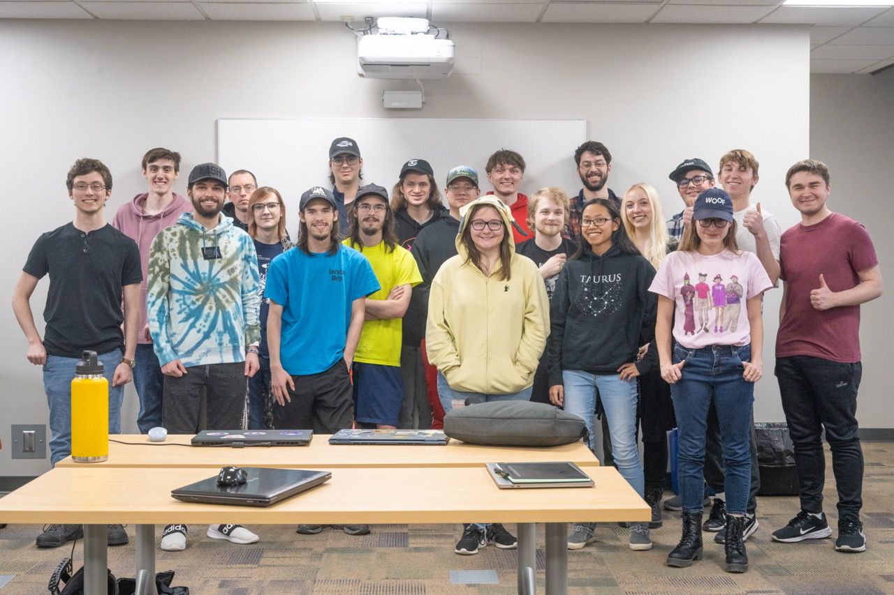

Playing video games can be fun, but I haven't yet been bored by making them myself. At the end of the day, I keep programming because I enjoy puzzling out a way to make game ideas work.
I prefer to keep myself busy with activities that I find both constructive and interesting. As of writing this, I have been programming and making games on my own time for about 6 years. In the past 3 years or so, there have been several instances where I have dedicated whatever time I could spare between college classes or 40+ hour workweeks to coding my own personal projects.
While working on personal and team projects, I have also dabbled in most aspects of making a game, from art and animation to sound design to leadership. I've jumped at almost every chance I can get to get more insight into the process, which has led me to take several lead roles such as Narrative Team Lead of our class Capstone course and more recently Vice President of UW-Whitewater's Game Development Club.
Crucially, my personal projects have also not hindered me in succeeding within my college's more professional work environment, as currently I hold a 3.5 cumulative GPA with a semester best of 3.8.
